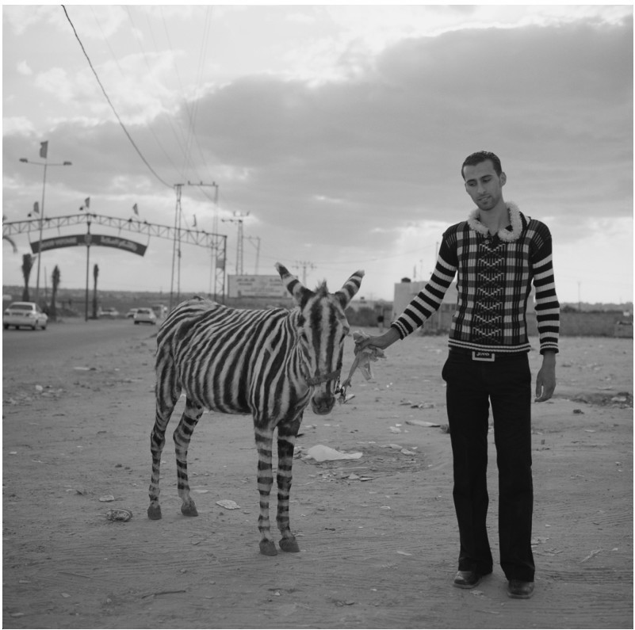

第七章
标准转换？
考虑语境
有些词的意思是游移不定的。例如“明天”这个词，在每天晚上都会向前移动，指向这一周的另一天。“这里”指的具体地方要取决于你正站在哪里，“我”指的是谁取决于是谁在说话，而“这一个”可以指任何东西。至于像“大”和“小”的概念就更微妙了：一只病态肥胖的老鼠在某种意义上是大的，但在另一个意义上又仍然是小的。那么当我们说“知道”这个动词的时候，是不是也有类似的情形呢？它的意义是否也可能以某种独特的方式游移不定呢？
上一段中所提到的所有这些语词，都有一个共同的特点，就是语境敏感性。对于这些词来说，语境在决定其意义的过程中扮演了重要的角色。像“我”和“现在”这样的词，它们的意义对说话者的身份与所处的时间空间就非常敏感。而像“大”与“高”这样的词，它们的意义对与之相对照的种类非常敏感：譬如我们说一栋摩天大楼很高，跟说一盒麦片很高相比，这个实际需要的高度是完全不一样的。更复杂的是，同一个东西可以是两个不同种类的个体：比如它既是老鼠又是动物，作为老鼠来说它是大的，但同时它又是小动物。那么我们究竟应该用什么词来形容它呢？这完全取决于我们在心里是拿什么种类与之相比较。也许有人会说，语境敏感的语词的词义总是在变化之中，但这种说法也不完全准确。为了理解“明天”究竟是什么意思，我们并不需要每天换一本新的词典。因为这里有某些确定的规则。例如，“我”就总是指那个正在说话的人，而“高”总是意味着“在它所属的种类里垂直方向上较大”。所以，语境敏感的语词并不是改变自己的意义，而是像有一个固定的配方那样，总是从交谈的语境中获取某些信息，以便确定它们实际指称的东西。一旦语境确定了下来，像“这一个”或“昨天”这样的语词指称也就随之而明确了。
“语境主义”（contextualism）就是指这样一种观点，它主张像“知道”和“认识到”这样的语词也是语境敏感的。之所以有人愿意接受语境主义，原因之一就是它旨在协调本书第一章和第二章中谈到的一些主要立场。第一章表明“知道”是人们最常用到的动词之一，当我们看到、听到或记起某事如何的时候，通常都会给一个这样的标签说我们知道这件事。当然，你知道你现在正读着这本书。第二章则表明，我们也很容易怀疑人类是不是真的能知道那么多事情。譬如说，你真的能知道自己现在正在读书而不只是在做梦？若要按语境主义者的话来说，上述两种立场其实完全可以是不冲突的。因为“知道”一词本身就是语境敏感的，所以一方面我们可以在日常意义上说你知道很多事情，另一方面我们也可以在怀疑论的立场上主张你其实什么都不知道。这两方面的主张完全可以相容，因为日常的说话者与怀疑论者处于不同的交谈语境之中，所以当他们说“知道”的时候表达的内容也会不同。对于同一个句子，譬如说“明天星期五”，有时说这句话为真，有时说这句话就为假，这取决于你在何时说这句话。同样的道理，我们在做知识归赋的时候说“某人知道自己在看书”，也可以有两种情况。一是在日常的较低标准下，某人的确是知道这一点的；但如果转换到怀疑论者所要求的高标准下，那么可能就得说“某人其实并不真的知道自己在看书”。
语境主义的兴起
作为一种知识论的理论，语境主义发端于1970年代早期的“相关选项”理论。这一理论的支持者认为，当我们说“知道”或“不知道”什么时，总是意味着做某种对比和比较。有一个例子：简带着儿子去动物园，看到前方的围场里有一只黑白条纹相间的动物，于是她就对儿子说：“比利看那儿，那是斑马！”她的确说对了，简的视觉没有问题，能辨识出普通的动物，而且她所看到的那只黑白条纹相间的动物也的确就是斑马。那么我们是不是能说简知道自己看到的动物是斑马呢？我们很容易会说她知道。但一个更棘手的问题就随之而来了：她怎么能确定自己所看到的动物不是一头巧妙伪装过的驴子呢？（图8）驴子也可以被涂上黑白相间的条纹，装饰一下耳朵和尾巴，使得从简的角度看，这头巧妙伪装过的驴子与真正的斑马几无可辨。按照相关选项理论，简所拥有的证据已经足够帮助她做出这是一匹斑马的判断，这一判断所暗含的对比意思是说，它不会是一头狮子、羚羊或是骆驼等等。在普通动物园所能有的动物范围内，简有一个相对简单的“相关选项”的集合，便于她从中挑选适合的对象。然而，她的证据却不足以使她辨别出这只动物不是巧妙伪装过的驴子：为了做出这个更难的判断，珍妮必须把“它实际上是一头巧妙伪装过的驴子”也纳入自己的相关选项集合中，进而再排除这个选项。这对她来说并非完全不可能，但为了排除这个诡异的可能性，简可能就得跳进关这只动物的围栏之中，走近一些，在动物的皮毛上抹些清洁剂看能否擦掉那些条纹。所以，在二十多步开外的距离处，简知道那是一匹斑马，但并不知道它不是一头巧妙伪装过的驴子。

图8 一个男人与玛拉动物园的一头被涂装过的著名驴子站在一起。安娜塔西亚·泰勒—林德摄于巴勒斯坦自治区的加沙市，2009年12月，来自第七图片库
在这个例子中，像“巧妙伪装过的驴子”这样的东西，不会是任何正常动物园的“相关选项”，至少对简所参观的这家动物园来说不是。但如果动物园经费紧张，或是就爱搞些恶作剧，那么它就可能是这些动物园的相关选项。所以，摆在相关选项理论面前的一大挑战是，如何为任一给定的判断确定它的相关选项？这里面有没有什么规则？这些选项的可能范围部分由对说话者来说实际可能的东西确定，但还有更多的理论细节有待于发掘。比如，简是不是知道这家动物园爱搞恶作剧，与选项的确定是否有关？这个就还不清楚。但更重要的是，相关选项理论有某些深刻的、不同寻常的东西涌现出来。
假设简知道一些基本的生物学知识，即她像大多数成年人一样知道斑马与驴子是两种不同的动物，所以不可能有一种东西既是斑马又是驴子。那么，按照这些基本的生物学知识与逻辑知识，如果那只动物是斑马，那它就不会是驴子。而逻辑学也会告诉我们，假如某个东西不是驴子，那它也就不可能是巧妙伪装过的驴子。相关选项理论所主张的是，简站在离斑马有二十多步的地方时，她知道自己看到的动物是斑马，同时也知道，如果它是斑马的话，那它就不会是一头巧妙伪装过的驴子。然而，她却并不真的知道那只动物不是巧妙伪装过的驴子。她可以知道方框6中的论证前提，而无法真正知道其结论，尽管她能看到前提与结论之间的逻辑联系。因此，相关选项理论违背了所谓的“封闭原则”——根据这一原则，从你已知的东西中按照逻辑演绎出的任何东西，都是你所知道的。
方框6 知识的相关选项理论的问题
简在二十多步开外就知道的是：
●那只动物是斑马。
●如果那只动物是斑马，那它就不是巧妙伪装过的驴子。而简并不知道：
●那只动物不是巧妙伪装过的驴子。
违背封闭原则看起来十分奇怪：你难道不信任逻辑演绎吗？更重要的是，一旦我们说简不知道那只动物不是巧妙伪装过的驴子，那么再坚持认为她仍知道那是斑马，就会听起来十分怪异。然而，的确有某些原初的洞见会迫使我们不得不诉诸相关选项理论：因为一方面，说简知道那只动物是斑马，这听起来是正确的；另一方面，说她在远距离处并不真的知道那只动物不是伪装的驴子，也是对的。
语境主义就是在这样的背景下兴起的。它一方面保留了相关选项理论的合理部分，另一方面又试图避免违背封闭原则。盖尔·斯泰恩在1976年发表了第一份对语境主义的清晰表述，包含两个部分。第一，斯泰恩主张，我们在不同的环境中采用高低不同的知识标准：“知识概念的本质特征在于，更严格的标准适用于不同的语境。譬如大街上的偶遇与教室或法庭上的环境，会是完全不同的标准——谁又能说在哲学讨论中就不是另一种标准呢？”对于做出判断的那个人来说，并非有一个确定的相关选项的集合。斯泰恩提出，当我们在评论某人是否有知识时，我们考虑的可能是许多或宽或窄的选项集合。第二，斯泰恩主张，在任何给定的语境中，我们都会恰当地坚持某一套标准。譬如说，假如我们担心伪装的驴子可能出现，那么说“简知道那只动物是斑马”就错了。如果简并没有我们这样的担心，她当然可以说，“我知道那是斑马”，而且也是真的判断。但此时简就不能用逻辑学和生物学知识来演绎出更遥远的结论，说它不是一头巧妙伪装过的驴子。只要简开始思考伪装驴子的可能性，那么她所使用的知识标准就必须把这些遥远的可能性也纳入进来，于是她就不能再说“我知道那是斑马”了。不论是在高标准还是在低标准下，谈论知道与否都是合理的；唯一要注意的是，你不能于同一个语境中在两种标准间来回切换，除非你首先转换谈论知识状态的语境。
在斯泰恩的语境主义表述中，知识总是意味着在或宽或窄的相关选项领域中做区分。在日常交谈中，说话者想知道三明治是鸡肉的还是金枪鱼的，那么只有当他能排除另一个选项，确定其中一个时，我们才能说他是对此有知识的。而对于怀疑论者来说，他想要考虑的相关选项就更为遥远了，譬如说，有可能有某些新品种的金枪鱼看起来很像鸡肉，又或是根本没有什么三明治，只有三明治的三维全息影像，甚至是来自某个恶魔的投射在欺骗我们，等等。一旦我们把相关选项扩展到如此宽泛的领域，那么任何人都很难说有真正的知识了。所以，语境主义最直观生动的表达形式，就是相关选项领域的扩展与收缩。但它背后的基本观念实则更为笼统，也并不一定要与“相关选项”的概念连在一起：这个观念主张“知道”的含义会随着语境的转换而变化，而语境主义的各种理论就是在提出决定这种语义转换的不同路径。内在论的语境主义观点是，不同语境要求证据的多少不同；而外在论的语境主义则主张，信念形成机制必须随着标准的升降而在或窄或宽的条件中追寻真理。语境主义就其本身来说并不是知识论，而是一种关于知识归赋语言的理论，是一种可以应用于各种知识论立场的语义“配菜”。
那么，这会是一种让人胃口大开的配菜吗？语境主义的确承诺它能对怀疑论问题给出简洁的解决方案，也就是让争论的双方在某种意义上都是正确的。大街上随便碰到一个人，他可以说“我知道自己正在读书”，而且也的确为真，但怀疑论者说“大街上的这个人不知道自己拿着一本书”，这也是对的。这里的奥妙就在于“知道”这个词为每一个说话者挑选了一个关系。当我们讨论怀疑论时，我们就已经在使用较高的知识标准了；这正像我们讨论篮球运动员时，说他长得“高”的标准也已经提高了很多。语境主义者很喜欢用这个类比来说明问题。譬如，一个身高六英尺（183厘米）的男子通常在美国算高个子了，因为美国男性的平均身高只有五英尺九英寸（175厘米[3]）。但即便如此，到了美国全国篮球协会（英语缩写NBA），六英尺就算不上高了，因为那里的平均身高就有六英尺七英寸（201厘米）。克里斯·保罗就是六英尺的篮球运动员，曾效力于洛杉矶快船队。篮球迷们在评价此队的强弱时可以诚实地说，“克里斯·保罗并不高”；同时，克里斯在交友网站上介绍自己时，也完全可以诚实地描述说自己是个子高的男人。其中并没有什么真正的冲突，因为标准是完全不同的。
这样，当我们要评论别人所做的判断时，就要特别小心了。如果仅仅根据自己的身高超过了美国男性的平均身高，克里斯就说“那些篮球迷说我的话都是假的”，那他自己就先犯了个错。同样的道理，如果篮球迷看到克里斯的交友信息上描述自己个子高，就说他讲了假话，因为他作为专业篮球运动员来说并不算高，那么这些篮球迷也一样犯错了。如果别人说的话是语境敏感的，那么当你去判断其真假时，就需要尊重这些说话者所处的具体语境。同样地，他们也需要尊重你所处的语境。最直接的办法就是把那些潜在的对比类明述出来。例如，“克里斯·保罗的个子高”这句话不完整，留下了一个空白：他相对于什么来说是个子高？这就要由语境来做填充了。我们可以说，“克里斯·保罗是个子高的美国男人”，也可以说“克里斯·保罗是个子不算高的篮球运动员”，这两句话都已经填充了空白，于是也都在各自的语境中表述了真理。
现在让我们回到知识的问题上，要怎样说才最清楚呢？我们是不是能把标准说清楚？“你知道自己正在读书”，是不是就像“克里斯·保罗个子高”一样？如果是的话，我们就有办法解决怀疑论的问题了。因为我们可以这样说：“你看，按照低标准来说，你的确知道自己是在看书了；但要是按高标准来说，你还真就不知道自己在看书呢。”这当然很简单了，但是否能令人满意呢？
其实也很难讲。因为说“高”这个词是语境敏感的，似乎没什么争议；但要说“知道”也是语境敏感的，恐怕就不那么容易了。语境主义经常面对的一种反驳意见是，它只不过是一种改头换面的怀疑论立场。因为怀疑论者本来就不需要挑战日常生活中的低标准的知识概念；在谈论日常对象时，怀疑论者也像其他人一样每天都在不加疑虑地使用“知道”这个动词。怀疑论者真正想说的是，只要我们更仔细小心地反思知识，那么我们就会明白，日常的知识断言其实都是假的。这并不意味着要废除所有对知识的谈论，因为在我们的日常交流中随意地谈论自己知道什么或不知道什么，或许会传递出有用的信息。例如，听你的同事说“小李知道谁拿到了那份工作”，这仍然是有意义的。但是，考虑到“知道”的严格含义，我们也许会得出结论说，小李其实并不真的知道谁得到了工作——他能保证自己就一定对吗？他能保证那个看似成功了的候选人不会被一块偶然飞来的陨石砸中吗？或许我们平常说“小李知道某事”，它真正表达的意思不过是说小李能告诉你一件很有可能为真的事。某些在字面意义上为假的话也可以用来传达有用的信息，这并没有什么不可能的。比如，你会在不严格的意义上使用很多词，像是说“我快饿死啦”，实际上你只是想说自己饿了而已。尽管从字面意义上说这句话是假的，但它还是能起到作用，因为主人听到你这么说就会奉上茶点。在怀疑论的语境中，语词意义的标准提高了，“小李知道谁拿到了那份工作”，这句话在高标准的“知道”意义上就是假的，即便我们在日常语境中说这句话是有用的。但如果语境主义认为，当怀疑论者否定日常生活中人们对简单事实的知识时，譬如说你根本不能知道自己现在正在读书，怀疑论者的确讲出了某些真理，那么至少看来语境主义站到了怀疑论的一边，而牺牲了常识上的知识概念。
实际上，语境主义要比上面描述的理论精巧得多，它并不简单地认为日常的知识概念都是“不严格的使用”。特别地，语境主义者非常在意尊重说话者所处的语境。按照这种观点，一方面怀疑论者可以说，“小李并不真的知道是谁得到了工作”，而且这在他们的语境中也的确为真。另一方面，日常生活中的普通人也可以说“小李知道是谁得到了工作”，怀疑论者在日常语境之中也不能说这句话为假。这个道理从另外一边来讲也是一样：普通人可以说“我知道自己正在看书”，这在日常语境中是个真语句；但他们也不能说怀疑论者就是错的，因为在哲学讨论中需要用到较高的知识标准，而在这个前提下，“你并不真的知道你在读书”，这样说也没什么问题。语境主义者并不需要在怀疑论哲学家的语境与常人生活的语境之间做孰优孰劣的区分，因为高的意义标准并不必然优于低标准。实际上，如果你只是想要写一张贺卡祝贺某人得到了工作，那么那个高的知识标准显然就不仅惹人生厌，而且也过于迂腐了。只要这两方各自安好，不贬低另一方的断言意义，则会是一个双赢的局面。
然而，语境主义对其他观点的这种和风细雨般的包容精神并不能打动所有人。批评这一观点的人坚持说，怀疑论与常识的立场不可能都是对的，其中必有一方才真正说出了有关知识问题的真理。一旦确定了谁是正确的一方，我们就不再需要其他的立场了。而从语境主义的角度看，想要问究竟是哪一方才真正抓住了知识的本质，就像是问到底星期几才是真正意义上的“明天”一样，本质上是毫无价值的问题。
如果语境主义都以友善的态度面对怀疑论与常识的立场，那么，对于“小李是否真的知道谁得到了工作？”这个问题，相信它不管在什么语境中都有唯一正确答案的人，就是语境主义在哲学上的对手。而语境主义面对它的这些对手时就不能那么友善了。语境主义者会说，这些人实际上犯了个错误，而且也不只是他们，如果有人认为怀疑论与常识立场的话不可能同时为真，那么持这种观点的人就也错了。语境主义者的确认识到，通常人们都会认为必须要选一个立场。毕竟，相对于“高”或“这里”这些词来说，“知道”的意义转换似乎更加让我们难以捉摸。所以，对于到底哪里算“这里”的问题，就不会有什么宏大的哲学传统来处理相关争论；但对于什么才是真正的“知识”，哲学上的争论就有着非常悠久的传统了。既然我们在谈论时间、地点或是像“高”这样的性质时，其语境的敏感性都是非常显而易见的，那么，为什么到了谈论知识的问题时，语言功能上的语境敏感性就对我们隐而不彰了呢？这个问题是当代语境主义者最为活跃的研究主题之一，他们也提出了许多解决的方案。一种可能性是这样的：我们在使用“知道”的时候，实际上关闭了进一步的探究，从而阻止了我们深入追溯这一概念意义的语境转换，而我们本来应该继续这样做的。这样就造成了一种幻象，好像知识本来就是绝对的。另一种可能性是说语境主义就是错的，知识的确是绝对的。说知识是绝对的，意思是说我们使用的相关语词并不是语境敏感的，这种观点被称作“不变论”（invariantism）。而它要面对的挑战是，如何解释使得知识时而容易时而困难的转换的直觉？
利益相关的不变论
小李下班后在去公交车站的路上，偶遇了他的同事史密斯，那时史密斯正要回单位大楼。
——“小李，你知道一楼供应室的门锁了没有？我刚想起来我的外套落那儿了，我也没有钥匙。”
——“是锁了的——就是半个小时前我锁的门，所以我知道，而且之后我也没在过道里遇见别人。抱歉！”
这里，小李主张自己真的有知识，似乎并没有什么争议。我们可以进一步假设，实际上那个门的确是锁了的，而小李的钥匙、视力和记忆也都没有问题。但现在来设想这个故事的另一个版本，在这个版本中，小李离开大楼后发生了另一个转折：在他走向公交车站的路上，小李碰见的不是史密斯，而是四位警官。
——“先生你好，对不起打扰了，但目前有个紧急情况，就发生在你刚刚离开的那栋大楼里。它的二楼发出一声枪响，开枪者目前还在大楼里。除了前门以外，还有什么别的途径能够离开那栋大楼？”
——“供应室那里有一个后门，但我在半小时以前已经把通往供应室的门锁上了。”
——“你真的确定它仍然锁着吗？有没有可能被别人打开过了？”
——“这我就不知道了——我没看到有什么人经过，但我也没一直盯着那扇门。”
在落下外套的故事里，小李声称自己知道门被锁了；而在枪击案的版本里，他却说自己并不知道有没有锁着门。这两次他主张的东西听起来都是真的。奇妙的是，这两个故事竟然可以与小李离开大楼的那个时刻并行不悖：在这两个情境中，小李都信任他在这半个小时内的记忆，并且用回忆的内容来回答自己是否真的知道门被锁了的问题。在传统知识论中，你是否真的拥有知识，取决于一些传统因素，譬如信念的真值、证据的优劣等。有趣的是，所有这些因素在上述两个故事里似乎是完全等同的。那么，在这些前提下，怎么可能小李在前一个故事里知道门被锁了，而在后一个故事里就不知道了？
语境主义者的解释非常明确：在公交车站进行的随意交谈里，实际起作用的是知识的较低标准，而当警官问话时，知识标准就被提高了。所以，小李在第一个故事里说自己知道是没问题的，在第二个故事里说“我不知道”也没有问题。但这个解释实际上并没有告诉我们，小李是如何在第一个故事里拥有知识，而在第二个故事里就没有知识了的：这其实是关于同一个人在两个语境下能说什么真话的解释。语境主义者会坚持说，从更高的知识标准来看，在第一个故事里，说小李真的知道门被锁了，其实是假的。所以，对于“小李究竟是知道还是不知道？”这个问题，就没有一个独立于语境的简单答案。
如果我们觉得，小李在第一个故事里真的知道那个门锁了，而在第二个故事里又的确不知道这一点，那么，这种感觉会把我们推向语境主义，以便找到某种能直接合乎这种感觉的知识论立场。如果知识论中的所有传统要素，像是真、证据、可靠性以及其他诸如此类的东西，都在两个故事里完全等同的话，那么剩下的一种可能性就是，有某些非传统的因素造成了其中的差异。那么，在这两个故事里，有哪些要素是不同的呢？一种被称作“利害相关的不变论”（interest-relative invariantism）的观点认为，这两者之间存在着某些实践上的差异。在第一个故事里，小李并没有面对多么利害攸关的选择。为了让史密斯能取回他的外套，作为一个好心的同事，小李会走回去帮他开门。但即便他在这个事情上搞错了，也没什么大不了的。走回去才发现门是开着的，那也不过就是浪费了几分钟时间多走了几步路而已。而在第二个故事里，一旦小李在“门是否锁着”这件事情上搞错了，实践上的后果就变得非常严重了，因为那个持枪者就有可能从后门逃之夭夭。
利害相关的不变论者发现，实践上的利害在很多情境中都发挥着影响。譬如说，你知道那个三明治是鸡肉的还是金枪鱼的吗？如果这并不是什么利害攸关的选择，就像你只是稍微更喜欢鸡肉三明治，而如果是金枪鱼的话，你就会倾向于不要三明治而换成汤了，那么一番随意的查看就足以主张自己知道了——譬如说，看到它像是鸡肉的，就可以说知道那是鸡肉三明治。但是，假如这个选择对你来说非常利害攸关，譬如说你对鱼肉有严重的过敏，那么仅凭随意的查看就不足以声称自己有知识了。所以，按照利害相关的不变论观点，你的选择越是利害攸关，你就越是需要更多的证据才能主张自己有知识。这也就是为什么小李故事的两个版本会在“小李是否知道”的问题上得出完全相反的答案。
利害相关的不变论区别于语境主义的地方在于，它是关于知识本身如何运作的理论，而不是关于知识归赋的词汇的语义学理论。它所做的判决并非仅在某些语境的表达中为真，而是彻底地为真。小李在第一个故事里有知识，而在第二个故事里的确没有。在这些判决中，是语境决定了小李拥有知识需要有多少证据的标准，而这最终是小李自己的语境，而非那些可以从不同的视角谈论小李的人所处的语境。按照这种不变论观点，当怀疑论者说，即便在第一个故事里，小李也不知道门锁没锁，那么他就搞错了。不变论的支持者尽管也对知识的本质有不同的见解，但他们有共识的一点是，正是实践上的利害参与决定了人们是否拥有知识，而这个要素不在传统知识论学者的考虑范围之内。随着风险上升，知识所需要的证据就会更多。支持这一理论的学者主张，利害相关的不变论最好地阐释了知识与行动之间的关系。
又是过时了的不变论？
语境主义者很快开始批评这种不变论，因为他们注意到，利害相关的不变论同样难以把握直觉上的某些转换模式。假如真的像不变论者所主张的那样，在第一个落下外套的故事版本中，小李的确知道门是锁着的，而且这也是一个平淡无奇的、独立于任何语境的事实，那么，怀疑论者又何以能如此容易地让我们开始怀疑这个事实呢？当我们谈论反事实条件的可能性时，利害相关的不变论观点就显得更加捉襟见肘。例如下面这句话：“侍者并不知道那个三明治究竟是金枪鱼的还是鸡肉的，但是，假若不是因为他的顾客中有人对某个选项过敏的话，侍者本来是知道的。”这听起来很奇怪，但利害相关的不变论者会说，其实这也是可能的。同时，支持不变论观点的人还会反过来批驳语境主义观点，通常他们会指出，“知道”这个词并不像其他语境敏感的词汇一样。例如，“知道”不像“个子高”，它不会很容易地适应不断变化的尺度；“知道”也不像“今天”，没有什么简单的规则能像说清楚“今天”的含义那样，说清楚“知道”如何受语境的影响。语境主义者已经表明，“知道”很可能有某种特殊的语境敏感性，但究竟它是怎样起作用的，仍然是未定之数。
正当主张标准转换的不同观点之间打得不可开交之时，还有一些人支持更为刚性的知识标准，希望知道他们那种过时了的观点在今天是否能赢得一席之地。严格的不变论者主张，知识就是由传统知识论的那些要素所严格决定的，包括真、证据和诸如此类的东西。在这个意义上，用作知识归赋的词汇就不再是语境敏感的。实际上，怀疑论就是严格不变论的众多直接形式之一。例如，学院派怀疑论认为，要拥有知识就必须符合某个唯一确定的标准，这就是要求我们对所判定的对象拥有无可辩驳的正确印象。不幸的是，我们从来没有在日常生活中满足这一标准，也许只有一两个像“我存在”这样的特殊判断能够达到标准。如果你认为自己真的知道你正在读书，那就错了。但是，如果知识离我们竟是如此遥远，而我们对知识又谈论得如此之多，那么怀疑论者似乎就欠缺一个解释，何以会是这样，对此我们可能感到满意或者不满。如果我们感到不满，那也许就会想要转向温和的严格不变论立场——我们可以说，知识的标准的确是唯一的、固定的，但它也是一个人们通常能够达到的标准，就像你的确知道自己正在读书，而小李也真的知道那扇门已经锁了。但这种严格又温和的不变论也还是有它自己的问题：它需要解释为什么怀疑论者能如此轻易地让我们怀疑自己做出的日常判断，而虽然小李在两个版本的故事中所依赖的严格的传统标准是相同的，但为什么他一旦被警官问话，他原来所拥有的知识似乎顷刻间就烟消云散了呢？对这些问题，温和版本的严格不变论付出了很多努力去寻求解答。他们所尝试的方向之一就是论证直觉的转换中出了错，或是造成这种转换的反例本身就有问题。还拿锁门的这个故事来说，其实两个版本之间的差距也许要比它们看起来的大很多。我们原来假设，在这两个版本中，决定知识标准满足与否的传统要素是等同的，但情况也许是这样：高风险将会自然地导致信心降低，或是使当事人以不同的方式思考既有的证据。另一种可能性是，在高风险的情境中，我们模糊了“知道”与“知道我们有知识”的界限，或是没有搞清楚实际上说了什么与想要表达什么之间的差异。我们对这些案例的直觉可能出了某些问题，又或许在与怀疑论对话或讨论生死攸关的话题时自然地发生了某些曲解，等等。考虑到类似问题的困难，可能有必要深入地考察一下，人们对知识的直觉究竟是怎样产生的，这应该是进一步合理解释此类直觉模式的必由之路。